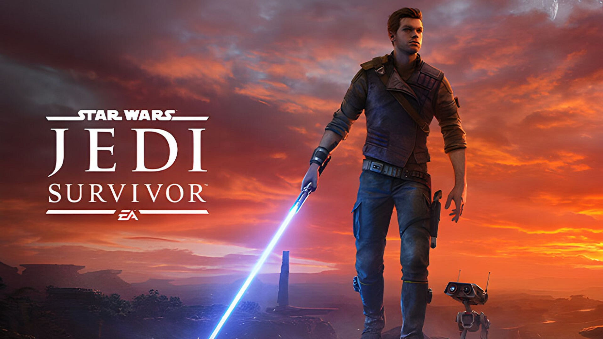
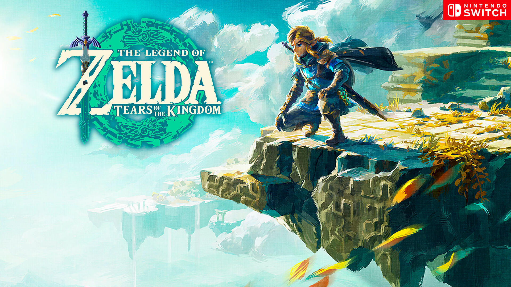

Assasin's Creed: Mirage
Aventura - Acción - Rol
Fecha de salida: 5 de Octubre de 2023
Assassin's Creed Mirage es la entrega de la saga de acción y aventura de Ubisoft publicada en 2023. Y nos propone un regreso a las raíces de la franquicia, con una propuesta de sigilo y acción más similar a la de los primeros juegos que la de las últimas aventuras RPG.

Baldur's Gate 3
Rol - Acción
Fecha de salida: 03 de Agosto de 2023
El regreso de una de las sagas RPG más queridas por los jugadores de todo el mundo. Baldur's Gate 3 trae de vuelta el mejor rol de fantasía de la mano de Larian Studios, los autores de la no menos exitosa serie de aventuras roleras Divinity: Original Sin.

Final Fantasy XVI
Rol - Aventura
Fecha de salida: 22 de Junio de 2023
Final Fantasy XVI trae de vuelta en 2023 el buque insignia de Square Enix en un videojuego que sigue apostando por una estética muy característica que atesoran los JRPG de la compañía japonesa. El legado de los cristales vuelve a tener importancia en este videojuego, enfocado en una campaña individual.

Return to Monkey Island
Aventura - Point and Click
Fecha de salida: 19 de Septiembre de 2022
Return to Monkey Island es una aventura gráfica nacida como una continuación directa de Secret of Monkey Island y Monkey Island 2: LeChuck's Revenge, contando entre los líderes del proyecto nada menos que a Ron Gilbert, diseñador y creador de las dos primeras entregas de la franquicia en LucasArts.

Star Wars Jedi: Survivor
Acción - Aventura
Fecha de salida: 28 de Abril de 2023
Tras Jedi: Fallen Order llega Star Wars Jedi: Survivor, el siguiente capítulo en la historia de Cal Kestis desarrollado por Respawn Entertainment bajo edición de EA. Se trata de un videojuego de acción y aventura narrativo ambientado cinco años después de los acontecimientos del título precedente, donde su protagonista ha de mantenerse un paso por delante de la persecución constante del Imperio.
